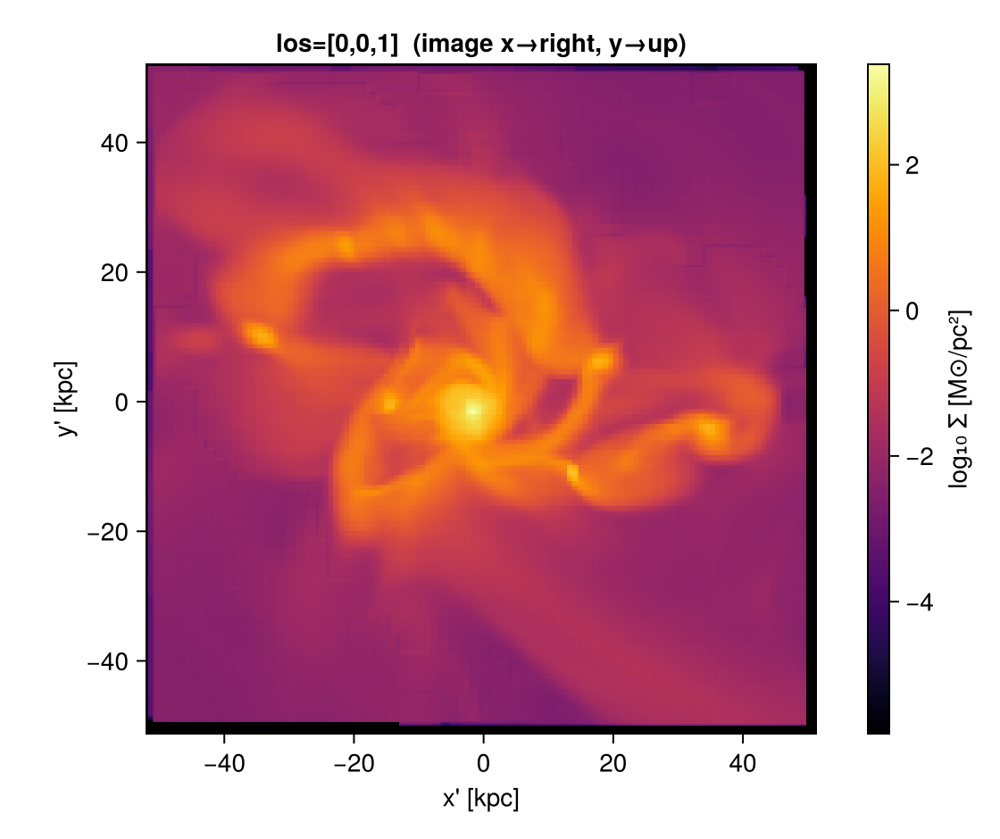
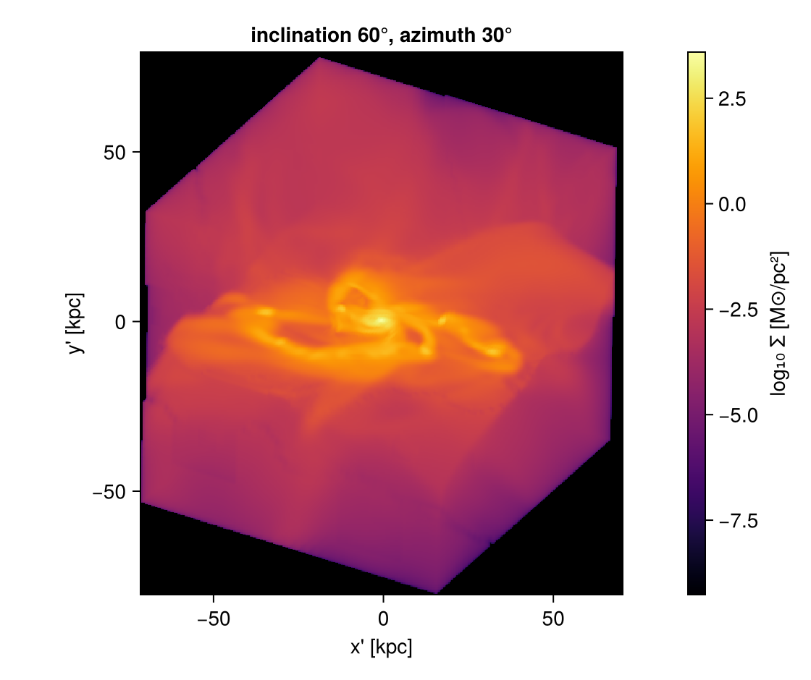
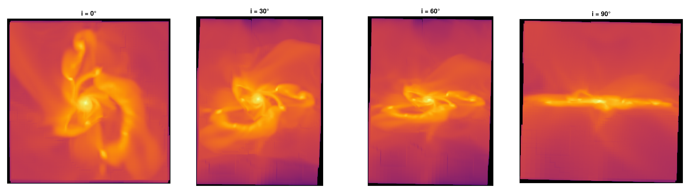
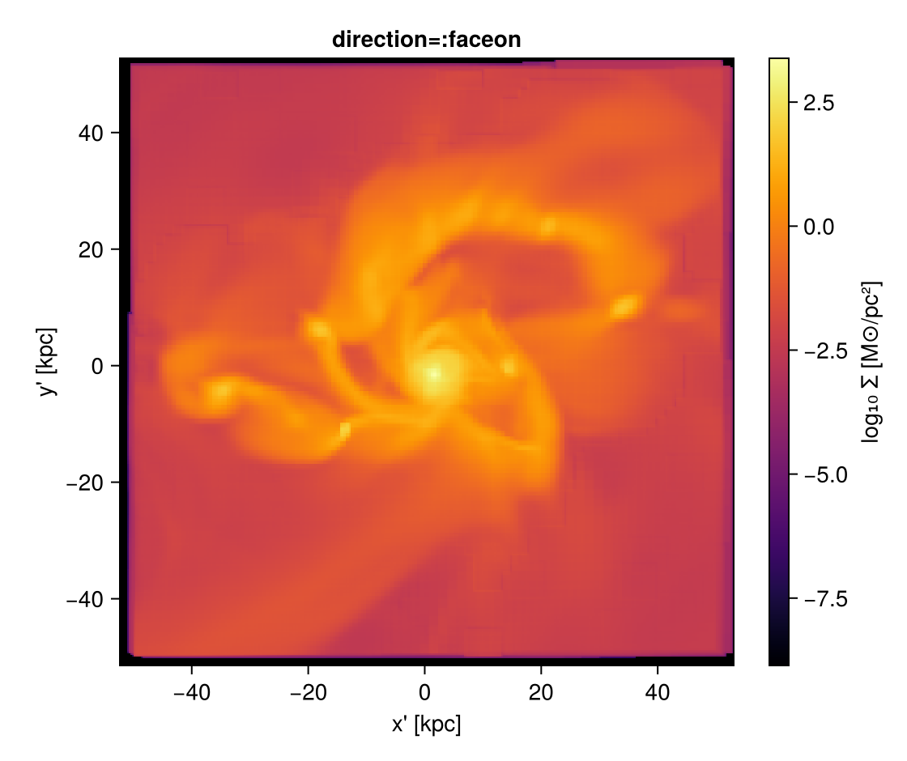
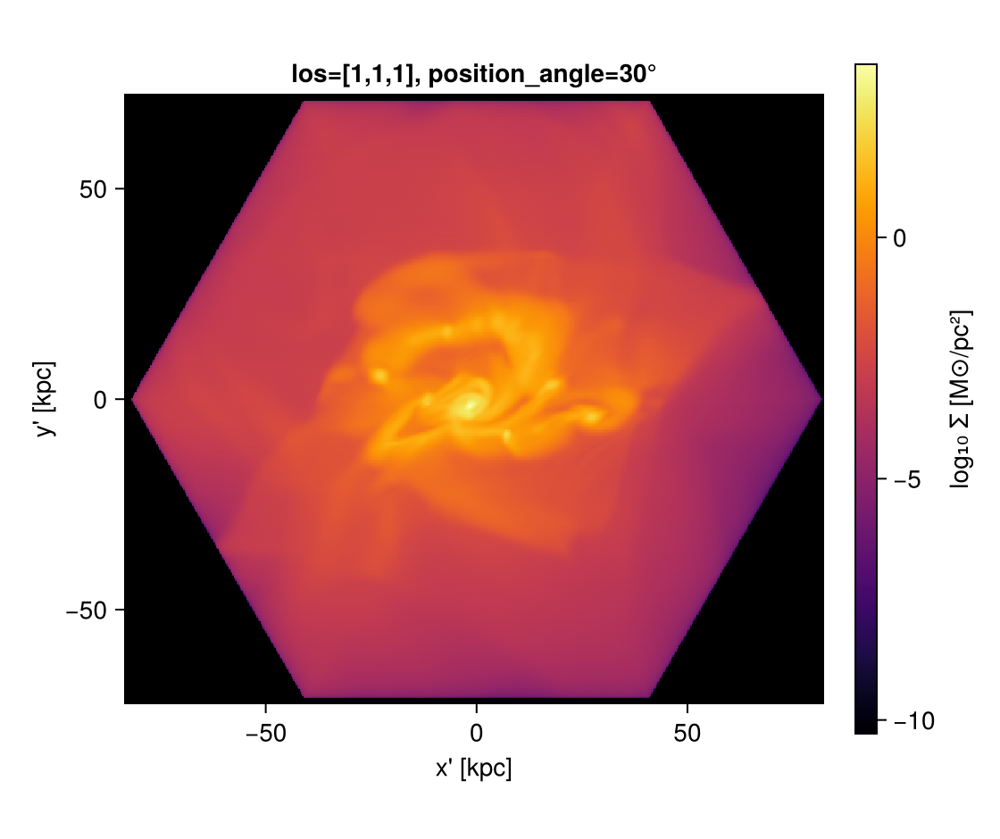
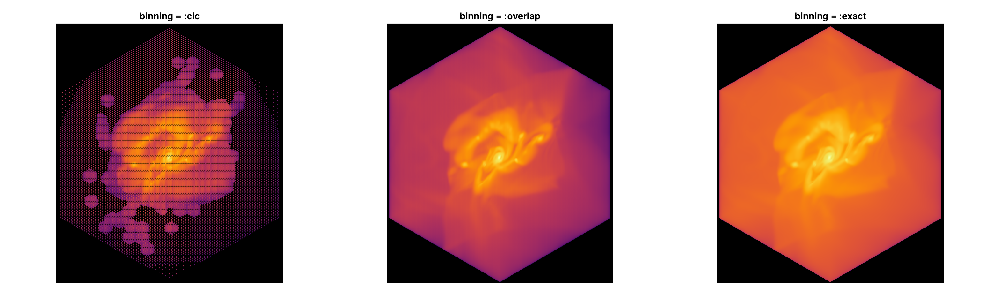
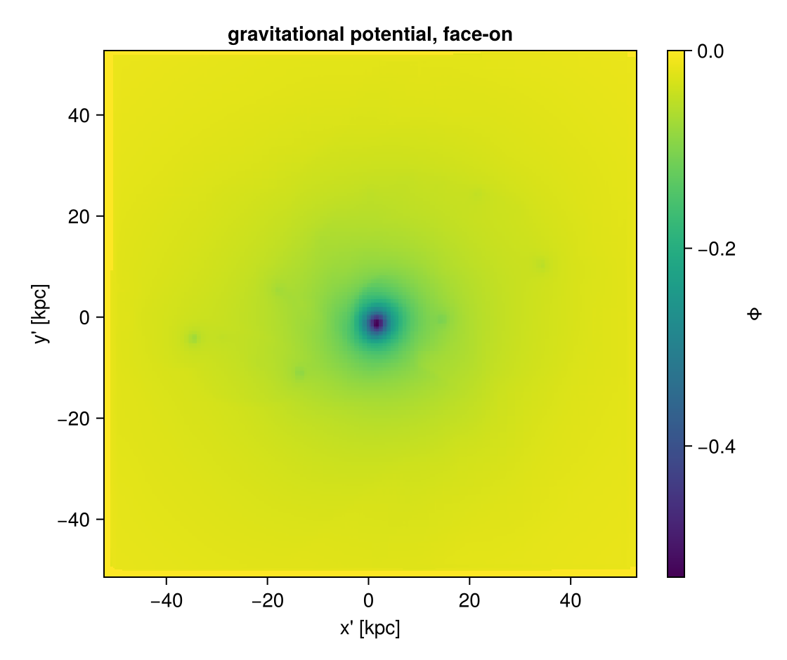
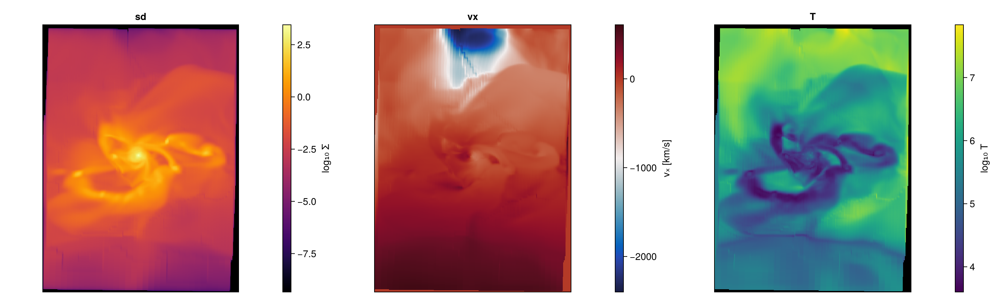

Off-axis projection with Mera
Project hydro / RT / gravity / particle data along any line of sight, not just the box axes. An off-axis projection is orthographic: the observer is at infinity, so all sightlines are parallel; each cell is carried along the line of sight onto the image plane.
This notebook follows the Off-axis Projection documentation. Pixel size is set physically with pxsize=[size, :unit] (preferred over res). Run the cells top to bottom and change the numbers to play around.
# --- environment ---------------------------------------------------------
# These tutorials use the development version of Mera in this repository.
# Point Pkg at your Mera.jl checkout (adjust the path), or delete these two
# lines if Mera is already in your default environment.
using Pkg
Pkg.activate(expanduser("~/Documents/codes/github/Mera.jl"))
using Mera, CairoMakie
CairoMakie.activate!()
println("threads = ", Threads.nthreads()) Activating
project at `~/Documents/codes/github/Mera.jl`
[ Info: Precompiling Mera [02f895e8-fdb1-4346-8fe6-c721699f5126] (cache misses: wrong dep version loaded (12), mismatched flags (6))
SYSTEM: caught exception of type :MethodError while trying to print a failed Task notice; giving up
SYSTEM: caught exception of type :MethodError while trying to print a failed Task notice; giving up
SYSTEM: caught exception of type :MethodError while trying to print a failed Task notice; giving up
SYSTEM: caught exception of type :MethodError while trying to print a failed Task notice; giving up
*__ __ _______ ______ _______
| |_| | | _ | | _ |
| | ___| | || | |_| |
| | |___| |_||_| |
| | ___| __ | |
| ||_|| | |___| | | | _ |
|_| |_|_______|___| |_|__| |__|
SYSTEM: caught exception of type :MethodError while trying to print a failed Task notice; giving up
SYSTEM: caught exception of type :MethodError while trying to print a failed Task notice; giving up
[ Info: Precompiling CairoMakie [13f3f980-e62b-5c42-98c6-ff1f3baf88f0] (cache misses: wrong dep version loaded (18))
SYSTEM: caught exception of type :MethodError while trying to print a failed Task notice; giving up
[ Info: Precompiling PolynomialsMakieExt [6a4b1961-d857-5aa3-b7f6-fc7c46de29bb] (cache misses: wrong dep version loaded (18))
SYSTEM: caught exception of type :MethodError while trying to print a failed Task notice; giving up
threads = 4Load a galaxy
Set the path/output of a simulation you have. The examples below use the Mera test galaxies; change BASE to your own data directory.
BASE = "/Volumes/FASTStorage/Simulations/Mera-Tests" # <-- change me
info = getinfo(100, joinpath(BASE, "spiral_clumps"), verbose=false)
gas = gethydro(info, verbose=false, show_progress=false) 0.749615 seconds (3.91 M allocations: 303.434 MiB, 1.29% gc time, 102.12% compilation time)
HydroDataType(Table with 590311 rows, 10 columns:
Columns:
# colname type
────────────────────
1 level Int64
2 cx Int64
3 cy Int64
4 cz Int64
5 rho Float64
6 vx Float64
7 vy Float64
8 vz Float64
9 p Float64
10 var6 Float64, InfoType(100, "/Volumes/FASTStorage/Simulations/Mera-Tests/spiral_clumps", FileNamesType("/Volumes/FASTStorage/Simulations/Mera-Tests/spiral_clumps/output_00100", "/Volumes/FASTStorage/Simulations/Mera-Tests/spiral_clumps/output_00100/info_00100.txt", "/Volumes/FASTStorage/Simulations/Mera-Tests/spiral_clumps/output_00100/amr_00100.", "/Volumes/FASTStorage/Simulations/Mera-Tests/spiral_clumps/output_00100/hydro_00100.", "/Volumes/FASTStorage/Simulations/Mera-Tests/spiral_clumps/output_00100/hydro_file_descriptor.txt", "/Volumes/FASTStorage/Simulations/Mera-Tests/spiral_clumps/output_00100/grav_00100.", "/Volumes/FASTStorage/Simulations/Mera-Tests/spiral_clumps/output_00100/part_00100.", "/Volumes/FASTStorage/Simulations/Mera-Tests/spiral_clumps/output_00100/part_file_descriptor.txt", "/Volumes/FASTStorage/Simulations/Mera-Tests/spiral_clumps/output_00100/rt_00100.", "/Volumes/FASTStorage/Simulations/Mera-Tests/spiral_clumps/output_00100/rt_file_descriptor.txt", "/Volumes/FASTStorage/Simulations/Mera-Tests/spiral_clumps/output_00100/info_rt_00100.txt", "/Volumes/FASTStorage/Simulations/Mera-Tests/spiral_clumps/output_00100/clump_00100.", "/Volumes/FASTStorage/Simulations/Mera-Tests/spiral_clumps/output_00100/timer_00100.txt", "/Volumes/FASTStorage/Simulations/Mera-Tests/spiral_clumps/output_00100/header_00100.txt", "/Volumes/FASTStorage/Simulations/Mera-Tests/spiral_clumps/output_00100/namelist.txt", "/Volumes/FASTStorage/Simulations/Mera-Tests/spiral_clumps/output_00100/compilation.txt", "/Volumes/FASTStorage/Simulations/Mera-Tests/spiral_clumps/output_00100/makefile.txt", "/Volumes/FASTStorage/Simulations/Mera-Tests/spiral_clumps/output_00100/patches.txt"), "RAMSES", Dates.DateTime("2023-05-12T22:47:36.638"), Dates.DateTime("2025-06-21T18:31:55.533"), 4, 3, 3, 7, 100.0, 9.9335244067439, 1.0, 1.0, 1.0, 0.0, 0.0, 0.045, 3.085677581282e21, 6.77025430198932e-23, 1.9890999999999996e42, 6.559266058737735e6, 4.70430312423675e14, 1.6667, true, 6, 8, 0, [:rho, :vx, :vy, :vz, :p, :var6], [:epot, :ax, :ay, :az], [:vx, :vy, :vz, :mass, :family, :tag, :birth, :metals], Symbol[], [:index, :lev, :parent, :ncell, :peak_x, :peak_y, :peak_z, Symbol("rho-"), Symbol("rho+"), :rho_av, :mass_cl, :relevance], Symbol[], DescriptorType(1, [:density, :velocity_x, :velocity_y, :velocity_z, :pressure, :metallicity], ["d", "d", "d", "d", "d", "d"], false, true, 1, [:position_x, :position_y, :position_z, :velocity_x, :velocity_y, :velocity_z, :mass, :identity, :levelp, :family, :tag, :birth_time, :metallicity], ["d", "d", "d", "d", "d", "d", "d", "i", "i", "b", "b", "d", "d"], false, true, [:epot, :ax, :ay, :az], false, false, 0, Dict{Any, Any}(), Dict{Any, Any}(), false, false, [:index, :lev, :parent, :ncell, :peak_x, :peak_y, :peak_z, Symbol("rho-"), Symbol("rho+"), :rho_av, :mass_cl, :relevance], false, false, Symbol[], false, false), true, true, true, false, true, false, true, Dict{Any, Any}("&COOLING_PARAMS" => Dict{Any, Any}("cooling" => ".true. ", "metal" => ".true. ", "z_ave" => "1."), "&SF_PARAMS" => Dict{Any, Any}("m_star " => " 1. ! in units mass_sph", "n_star " => " 1 ", "T2_star" => " 1e4 ", "eps_star " => " 0.02 !2%"), "&AMR_PARAMS" => Dict{Any, Any}("levelmax" => "7", "npartmax" => " 500000", "ngridmax" => " 100000 ", "boxlen" => "100. !kpc\t", "levelmin" => "3 ", "nexpand" => "1 "), "&BOUNDARY_PARAMS" => Dict{Any, Any}("jbound_min" => " 0, 0,-1,+1,-1,-1", "kbound_max" => " 0, 0, 0, 0,-1,+1", "no_inflow" => ".true.", "bound_type" => " 2, 2, 2, 2, 2, 2 !2", "nboundary " => " 6", "ibound_max" => "-1,+1,+1,+1,+1,+1", "ibound_min" => "-1,+1,-1,-1,-1,-1", "jbound_max" => " 0, 0,-1,+1,+1,+1", "kbound_min" => " 0, 0, 0, 0,-1,+1"), "&OUTPUT_PARAMS" => Dict{Any, Any}("tend" => "10 !Final time of the simulation", "delta_tout" => "0.1 !Time increment between outputs"), "&POISSON_PARAMS" => Dict{Any, Any}("gravity_type" => "-3 "), "&UNITS_PARAMS" => Dict{Any, Any}("units_density " => " 0.677025430198932E-22 ! 1e9 Msol/kpc^3", "units_time " => " 0.470430312423675E+15 ! G", "units_length " => " 0.308567758128200E+22 ! kpc"), "&RUN_PARAMS" => Dict{Any, Any}("pic" => ".true.", "nsubcycle" => "20*2 ", "clumpfind" => "true", "ncontrol" => "1 !frequency of screen output", "poisson" => ".true.", "verbose" => ".false.", "nremap" => "5 !10", "nrestart" => "99", "hydro" => ".true."), "&CLUMPFIND_PARAMS" => Dict{Any, Any}("ivar_clump" => "1", "density_threshold" => "0.01"), "&FEEDBACK_PARAMS" => Dict{Any, Any}("t_sne" => "10. !10. !Myr", "eta_sn " => "0.2", "!delayed_cooling" => ".true.", "!t_diss " => " 1.\t!Myr", "f_ek" => "0.")…), true, true, Mera.FilesContentType(["#############################################################################", "# If you have problems with this makefile, contact Romain.Teyssier@gmail.com", "#############################################################################", "# Compilation time parameters", "NVECTOR = 64 #32", "NDIM = 3", "NPRE = 8", "NVAR = 6", "NENER = 0", "SOLVER = hydro" … "\t\$(F90) \$(FFLAGS) -c write_patch.f90 -o \$@", "%.o:%.F", "\t\$(F90) \$(FFLAGS) -c \$^ -o \$@ \$(LIBS_OBJ)", "%.o:%.f90", "\t\$(F90) \$(FFLAGS) -c \$^ -o \$@ \$(LIBS_OBJ)", "FORCE:", "#############################################################################", "clean:", "\trm -f *.o *.\$(MOD) *.i", "#############################################################################"], [" --------------------------------------------------------------------", "", " minimum average maximum standard dev std/av % rmn rmx TIMER", " 0.388 0.392 0.397 0.004 0.009 0.7 4 1 refine ", " 0.507 2.917 5.424 1.783 0.611 5.5 1 3 particles ", " 1.347 1.701 2.269 0.344 0.202 3.2 4 1 feedback ", " 16.465 17.380 18.250 0.646 0.037 32.7 3 1 poisson ", " 3.399 4.081 4.713 0.478 0.117 7.7 3 1 rho ", " 0.529 0.541 0.550 0.008 0.014 1.0 1 3 courant ", " 0.079 0.091 0.098 0.007 0.081 0.2 3 2 hydro - set unew ", " 15.304 18.454 22.169 2.656 0.144 34.8 3 4 hydro - godunov ", " 1.796 5.559 8.199 2.596 0.467 10.5 4 3 hydro - rev ghostzones ", " 0.109 0.132 0.142 0.013 0.100 0.2 3 2 hydro - set uold ", " 0.057 0.088 0.122 0.023 0.262 0.2 1 4 hydro upload fine ", " 1.073 1.312 1.474 0.161 0.122 2.5 3 4 cooling ", " 0.112 0.122 0.135 0.009 0.078 0.2 4 3 hydro - ghostzones ", " 0.298 0.301 0.306 0.003 0.011 0.6 4 1 flag ", " 53.074 100.0 TOTAL"], ["/data2/mabe/MeraTest/Ramses/patch_2019_10version/add_list.f90", "!################################################################", "!################################################################", "!################################################################", "!################################################################", "subroutine add_list(ind_part,list2,ok,np)", " use amr_commons", " use pm_commons", " implicit none", " integer::np" … " end do", "", " end do", " ! End loop over grid cells", "end subroutine tsc_cell", "#endif", "!###########################################################", "!###########################################################", "!###########################################################", "!###########################################################"]), true, true, true, 0, ScalesType002(0.0010000000000006482, 1.0000000000006481, 1000.0000000006482, 1.0000000000006482e6, 3261.5637769461323, 2.0626480623310105e23, 3.0856775812820004e16, 3.085677581282e19, 3.085677581282e21, 3.085677581282e22, 3.085677581282e25, 1.0000000000019446e-9, 1.0000000000019444, 1.0000000000019448e9, 1.0000000000019446e18, 3.469585750743794e10, 8.775571306099254e69, 2.9379989454983075e49, 2.9379989454983063e58, 2.9379989454983065e64, 2.937998945498306e67, 2.937998945498306e76, 0.9999999999980551, 0.9999999999980551, 6.77025430198932e-23, 999.9999999987034, 999.9999999987034, 0.20890821919226463, 0.014907037050462488, 14.907037050462488, 1.4907037050462488e7, 4.70430312423675e14, 4.70430312423675e17, 9.999999999999998e8, 9.999999999999998e8, 3.330598439436053e14, 1.0479261167570186e12, 1.9890999999999996e42, 65.59266058737735, 65592.66058737735, 6.559266058737735e6, 30.996344997059538, 8.557898117221824e55, 2.9128322630389308e-9, 517291.4494607442, 517291.4494607442, 680646.644027295, 680646.644027295, 2.9128322630389304e-9, 2.9128322630389304e-9, 2.109755819936081e7, 2.109755819936081e7, 3.1162135509683387e29, 1.2537844818309073e65, 6.198460374231122e71, 6.198460374231122e64, 2.109755819936081e7, 2.1097558199360812e8, 1.380649e-16, 4.0258946849746426e70, 4.0258946849746426e70, 4.0258946849746425e71, 0.00019132101231911184, 191.32101231911184, 191.32101231911184, 1.9132101231911187e-8, 5.341419875695069e67, 5.341419875695069e64, 5.341419875695069e61, 1.819163836006061e41, 4.752256624885217e7, 4.752256624885217e7, 3.4036771916893676e-65, 1.158501842524895e-120, 30.996344997059538, 0.09145663043618026, 6.1918464565599674e-24, 6.1918464565599674e-24, 0.6191846456559967, 619.1846456559967, 619184.6456559967, 1.2584832481461724e23, 1.2584832481461724e23, 1.3943119491905496e-8, 1.3943119491905495e-10, 1.3943119491905496e-13, 3.0984365782372897e-9, 4.302397122930886e13, 4.302397122930886e6, 4302.397122930886, 2.9128322630389304e-9, 8.557898117221824e55, 9.439846472322433e-31, 4.5186572882681335e-30, 3.085677581282e21, 1.9890999999999996e42, 4.70430312423675e14, 1.0, 6.8587767484e-314, 6.858776867e-314, 6.858776938e-314, 6.858776962e-314, 6.8587769855e-314, 6.858777033e-314, 6.8587770567e-314, 6.8587770804e-314, 6.858777104e-314, 6.858777128e-314, 6.858777199e-314, 6.8587772227e-314, 6.8587772464e-314, 4.302397122930886e13, 6.858777294e-314, 3.085677581282e21, 1.9890999999999996e42, 1.9890999999999996e42, 4.70430312423675e14, 8.557898117221824e55, 8.557898117221824e55, 1.0, 6.8587775784e-314, 6.858777602e-314, 1.3943119491905496e-8, 1.3943119491905496e-8, 1.3943119491905496e-8, 1.3943119491905496e-8, 1.3943119491905496e-8, 3.085677581282e21, 3.085677581282e21, 1.0, 1.0, 1.0, 57.29577951308232), GridInfoType(100000, 272, 3, 3, 3, 7, 6, 25604, [0.0, 1.152424e6, 3.83576e6, 9.850944e6, 1.6777216e7], Bool[0, 0, 0, 0]), PartInfoType(0.0, 0.6708241192497574, 0.0, 0, 39970, 413895, 0, 0, 0, 0, 0, 0, 0, 0, 0, 0, 0), CompilationInfoType("", "", "", "", ""), PhysicalUnitsType002(0.01495978707, 3.08567758128e24, 3.08567758128e21, 3.08567758128e18, 3.08567758128e15, 9.4607304725808e17, 1.9891e33, 1.9891e33, 5.9722e27, 1.89813e30, 6.96e10, 6.96e10, 9.1093837015e-28, 1.67262192369e-24, 1.67492749804e-24, 1.66e-24, 1.6605390666e-24, 6.02214076e23, 2.99792458e10, 6.6743e-8, 1.380649e-16, 1.380649e-16, 6.62607015e-27, 1.0545718176461565e-27, 5.670374419e-5, 6.6524587321e-25, 0.0072973525693, 8.314462618e7, 1.602176634e-12, 1.602176634e-9, 1.602176634e-6, 0.001602176634, 3.828e33, 3.828e33, 1.6605390666e-24, 86400.0, 3600.0, 60.0, 3.15576e16, 3.15576e13, 3.15576e7)), 3, 7, 100.0, [0.0, 1.0, 0.0, 1.0, 0.0, 1.0], [1, 2, 3, 4, 5, 6], Dict{Any, Any}(), 0.0, 0.0, ScalesType002(0.0010000000000006482, 1.0000000000006481, 1000.0000000006482, 1.0000000000006482e6, 3261.5637769461323, 2.0626480623310105e23, 3.0856775812820004e16, 3.085677581282e19, 3.085677581282e21, 3.085677581282e22, 3.085677581282e25, 1.0000000000019446e-9, 1.0000000000019444, 1.0000000000019448e9, 1.0000000000019446e18, 3.469585750743794e10, 8.775571306099254e69, 2.9379989454983075e49, 2.9379989454983063e58, 2.9379989454983065e64, 2.937998945498306e67, 2.937998945498306e76, 0.9999999999980551, 0.9999999999980551, 6.77025430198932e-23, 999.9999999987034, 999.9999999987034, 0.20890821919226463, 0.014907037050462488, 14.907037050462488, 1.4907037050462488e7, 4.70430312423675e14, 4.70430312423675e17, 9.999999999999998e8, 9.999999999999998e8, 3.330598439436053e14, 1.0479261167570186e12, 1.9890999999999996e42, 65.59266058737735, 65592.66058737735, 6.559266058737735e6, 30.996344997059538, 8.557898117221824e55, 2.9128322630389308e-9, 517291.4494607442, 517291.4494607442, 680646.644027295, 680646.644027295, 2.9128322630389304e-9, 2.9128322630389304e-9, 2.109755819936081e7, 2.109755819936081e7, 3.1162135509683387e29, 1.2537844818309073e65, 6.198460374231122e71, 6.198460374231122e64, 2.109755819936081e7, 2.1097558199360812e8, 1.380649e-16, 4.0258946849746426e70, 4.0258946849746426e70, 4.0258946849746425e71, 0.00019132101231911184, 191.32101231911184, 191.32101231911184, 1.9132101231911187e-8, 5.341419875695069e67, 5.341419875695069e64, 5.341419875695069e61, 1.819163836006061e41, 4.752256624885217e7, 4.752256624885217e7, 3.4036771916893676e-65, 1.158501842524895e-120, 30.996344997059538, 0.09145663043618026, 6.1918464565599674e-24, 6.1918464565599674e-24, 0.6191846456559967, 619.1846456559967, 619184.6456559967, 1.2584832481461724e23, 1.2584832481461724e23, 1.3943119491905496e-8, 1.3943119491905495e-10, 1.3943119491905496e-13, 3.0984365782372897e-9, 4.302397122930886e13, 4.302397122930886e6, 4302.397122930886, 2.9128322630389304e-9, 8.557898117221824e55, 9.439846472322433e-31, 4.5186572882681335e-30, 3.085677581282e21, 1.9890999999999996e42, 4.70430312423675e14, 1.0, 6.8587767484e-314, 6.858776867e-314, 6.858776938e-314, 6.858776962e-314, 6.8587769855e-314, 6.858777033e-314, 6.8587770567e-314, 6.8587770804e-314, 6.858777104e-314, 6.858777128e-314, 6.858777199e-314, 6.8587772227e-314, 6.8587772464e-314, 4.302397122930886e13, 6.858777294e-314, 3.085677581282e21, 1.9890999999999996e42, 1.9890999999999996e42, 4.70430312423675e14, 8.557898117221824e55, 8.557898117221824e55, 1.0, 6.8587775784e-314, 6.858777602e-314, 1.3943119491905496e-8, 1.3943119491905496e-8, 1.3943119491905496e-8, 1.3943119491905496e-8, 1.3943119491905496e-8, 3.085677581282e21, 3.085677581282e21, 1.0, 1.0, 1.0, 57.29577951308232))A small helper to show a 2D map with physical axes and a colourbar (we will reuse it):
function showmap(M, ext_kpc; title="", clabel="log₁₀ Σ [M⊙/pc²]", logscale=true, cmap=:inferno, crange=nothing)
A = logscale ? log10.(replace(M, 0.0=>NaN)) : Float64.(M)
fig = Figure(size=(560,470))
ax = Axis(fig[1,1], aspect=DataAspect(), title=title, xlabel="x' [kpc]", ylabel="y' [kpc]")
hm = crange===nothing ?
heatmap!(ax, range(ext_kpc[1],ext_kpc[2],length=size(A,1)), range(ext_kpc[3],ext_kpc[4],length=size(A,2)), A, colormap=cmap, nan_color=:black) :
heatmap!(ax, range(ext_kpc[1],ext_kpc[2],length=size(A,1)), range(ext_kpc[3],ext_kpc[4],length=size(A,2)), A, colormap=cmap, nan_color=:black, colorrange=crange)
Colorbar(fig[1,2], hm, label=clabel)
fig
endshowmap (generic function with 1 method)0. The camera basis
Every off-axis view is just an orthonormal camera basis built from the line of sight: w (the viewing direction), and right/up spanning the image plane (image x = right, y = up), right-handed with right × up = w. Each cell is carried along w onto that plane. Everything below only changes how this basis is pointed — the basis travels on the returned map (.los, .cam_right, .up, .center, .direction).
cam = projection(gas, :sd, :Msol_pc2; los=[0,0,1], center=[:bc], binning=:overlap, range_unit=:kpc, pxsize=[0.3, :kpc])
println("line of sight w = ", round.(cam.los, digits=3))
println("camera right (image x)= ", round.(cam.cam_right, digits=3))
println("camera up (image y)= ", round.(cam.up, digits=3))
println("projection centre = ", round.(cam.center, digits=3), " direction = ", cam.direction)
showmap(cam.maps[:sd], cam.extent .* gas.scale.kpc; title="los=[0,0,1] (image x→right, y→up)")[Mera]: 2026-06-06T10:06:22.435
center: [0.5, 0.5, 0.5] ==> [50.0 [kpc] :: 50.0 [kpc] :: 50.0 [kpc]]
domain:
xmin::xmax: 0.0 :: 1.0 ==> 0.0 [kpc] :: 100.0 [kpc]
ymin::ymax: 0.0 :: 1.0 ==> 0.0 [kpc] :: 100.0 [kpc]
zmin::zmax: 0.0 :: 1.0 ==> 0.0 [kpc] :: 100.0 [kpc]
Selected var(s)=(:sd,)
Weighting = :mass
Off-axis LOS =
[0.0, 0.0, 1.0] (binning=:overlap)
Effective resolution: 334^2 → map size: 344 x 344
line of sight w =
[0.0, 0.0, 1.0]
camera right (image x)= [0.0, -1.0, 0.0]
camera up (image y)= [1.0, 0.0, -0.0]
projection centre = [0.5, 0.5, 0.5] direction = offaxis
1. The everyday way: inclination & azimuth
Tilt the view away from a reference axis by inclination (0° = looking straight down the axis, 90° = perpendicular) and rotate around it by azimuth. Angles are in degrees.
axis defaults to the box :z (assumes nothing — good for clouds/filaments). For a disk use axis=:angmom (the object's own angular momentum L): then 0° = face-on, 90° = edge-on.
m = projection(gas, :sd, :Msol_pc2; inclination=60, azimuth=30, axis=:angmom,
center=[:bc], binning=:overlap, range_unit=:kpc, pxsize=[0.3, :kpc])
showmap(m.maps[:sd], m.extent .* gas.scale.kpc; title="inclination 60°, azimuth 30°")[Mera]: 2026-06-06T10:06:37.431
center: [0.5, 0.5, 0.5] ==> [50.0 [kpc] :: 50.0 [kpc] :: 50.0 [kpc]]
domain:
xmin::xmax: 0.0 :: 1.0 ==> 0.0 [kpc] :: 100.0 [kpc]
ymin::ymax: 0.0 :: 1.0 ==> 0.0 [kpc] :: 100.0 [kpc]
zmin::zmax: 0.0 :: 1.0 ==> 0.0 [kpc] :: 100.0 [kpc]
Selected var(s)=(:sd,)
Weighting = :mass
Off-axis LOS = [0.7427, -0.4216, -0.5202] (binning=:overlap)
Effective resolution: 334^2 → map size: 473 x 533
Face-on → edge-on sequence
Only the camera changes; the data do not.
fig = Figure(size=(1500,420))
for (k,i) in enumerate((0,30,60,90))
p = projection(gas, :sd, :Msol_pc2; inclination=i, axis=:angmom, binning=:overlap,
center=[:bc], range_unit=:kpc, pxsize=[0.3, :kpc])
A = log10.(replace(p.maps[:sd], 0.0=>NaN)); e = p.extent .* gas.scale.kpc
ax = Axis(fig[1,k], aspect=DataAspect(), title="i = $(i)°")
heatmap!(ax, range(e[1],e[2],length=size(A,1)), range(e[3],e[4],length=size(A,2)), A, colormap=:inferno, nan_color=:black)
hidedecorations!(ax)
end
fig[Mera]: 2026-06-06T10:06:38.543
center: [0.5, 0.5, 0.5] ==> [50.0 [kpc] :: 50.0 [kpc] :: 50.0 [kpc]]
domain:
xmin::xmax: 0.0 :: 1.0 ==> 0.0 [kpc] :: 100.0 [kpc]
ymin::ymax: 0.0 :: 1.0 ==> 0.0 [kpc] :: 100.0 [kpc]
zmin::zmax: 0.0 :: 1.0 ==> 0.0 [kpc] :: 100.0 [kpc]
Selected var(s)=(:sd,)
Weighting = :mass
Off-axis LOS = [-0.0144, 0.0222, -0.9997] (binning=:overlap)
Effective resolution: 334^2 → map size: 347 x 351
[Mera]: 2026-06-06T10:06:39.315
center: [0.5, 0.5, 0.5] ==> [50.0 [kpc] :: 50.0 [kpc] :: 50.0 [kpc]]
domain:
xmin::xmax: 0.0 :: 1.0 ==> 0.0 [kpc] :: 100.0 [kpc]
ymin::ymax: 0.0 :: 1.0 ==> 0.0 [kpc] :: 100.0 [kpc]
zmin::zmax: 0.0 :: 1.0 ==> 0.0 [kpc] :: 100.0 [kpc]
Selected var(s)=(:sd,)
Weighting = :mass
Off-axis LOS = [0.4875, 0.0193, -0.8729] (binning=:overlap)
Effective resolution: 334^2 → map size: 351 x 469
[Mera]: 2026-06-06T10:06:39.706
center: [0.5, 0.5, 0.5] ==> [50.0 [kpc] :: 50.0 [kpc] :: 50.0 [kpc]]
domain:
xmin::xmax: 0.0 :: 1.0 ==> 0.0 [kpc] :: 100.0 [kpc]
ymin::ymax: 0.0 :: 1.0 ==> 0.0 [kpc] :: 100.0 [kpc]
zmin::zmax: 0.0 :: 1.0 ==> 0.0 [kpc] :: 100.0 [kpc]
Selected var(s)=(:sd,)
Weighting = :mass
Off-axis LOS = [0.8588, 0.0114, -0.5123] (binning=:overlap)
Effective resolution: 334^2 → map size: 351 x 474
[Mera]: 2026-06-06T10:06:40.241
center: [0.5, 0.5, 0.5] ==> [50.0 [kpc] :: 50.0 [kpc] :: 50.0 [kpc]]
domain:
xmin::xmax: 0.0 :: 1.0 ==> 0.0 [kpc] :: 100.0 [kpc]
ymin::ymax: 0.0 :: 1.0 ==> 0.0 [kpc] :: 100.0 [kpc]
zmin::zmax: 0.0 :: 1.0 ==> 0.0 [kpc] :: 100.0 [kpc]
Selected var(s)=(:sd,)
Weighting = :mass
Off-axis LOS = [0.9999, 0.0003, -0.0143] (binning=:overlap)
Effective resolution: 334^2 → map size: 351 x 353
2. Other ways to choose the view
Give exactly one line-of-sight specifier (two raise an error, so a wrong figure can't slip through). All are equivalent ways to point the camera:
| option | meaning |
|---|---|
inclination, azimuth, axis | tilt from a reference axis (recommended) |
direction=:faceon / :edgeon | disk along / ⟂ to L (shortcut for axis=:angmom) |
los=[lx,ly,lz] | explicit line-of-sight vector |
theta, phi | spherical angles about the box axes |
Modifiers: position_angle rolls the image about the line of sight; up=[..] sets the camera up.
!!! note :faceon/:edgeon/axis=:angmom use L, computed about center — center on the object so L is the true spin.
fo = projection(gas, :sd, :Msol_pc2, direction=:faceon, center=[:bc], binning=:overlap, range_unit=:kpc, pxsize=[0.3, :kpc])
showmap(fo.maps[:sd], fo.extent .* gas.scale.kpc; title="direction=:faceon")[Mera]: 2026-06-06T10:06:42.029
center: [0.5, 0.5, 0.5] ==> [50.0 [kpc] :: 50.0 [kpc] :: 50.0 [kpc]]
domain:
xmin::xmax: 0.0 :: 1.0 ==> 0.0 [kpc] :: 100.0 [kpc]
ymin::ymax: 0.0 :: 1.0 ==> 0.0 [kpc] :: 100.0 [kpc]
zmin::zmax: 0.0 :: 1.0 ==> 0.0 [kpc] :: 100.0 [kpc]
Selected var(s)=(:sd,)
Weighting = :mass
Off-axis LOS = [-0.0144, 0.0222, -0.9997] (binning=:overlap)
Effective resolution: 334^2 → map size: 351 x 347
# explicit vector + an image roll (position angle)
pr = projection(gas, :sd, :Msol_pc2, los=[1,1,1], position_angle=30, center=[:bc], binning=:overlap, range_unit=:kpc, pxsize=[0.3, :kpc])
showmap(pr.maps[:sd], pr.extent .* gas.scale.kpc; title="los=[1,1,1], position_angle=30°")[Mera]: 2026-06-06T10:06:42.897
center: [0.5, 0.5, 0.5] ==> [50.0 [kpc] :: 50.0 [kpc] :: 50.0 [kpc]]
domain:
xmin::xmax: 0.0 :: 1.0 ==> 0.0 [kpc] :: 100.0 [kpc]
ymin::ymax: 0.0 :: 1.0 ==> 0.0 [kpc] :: 100.0 [kpc]
zmin::zmax: 0.0 :: 1.0 ==> 0.0 [kpc] :: 100.0 [kpc]
Selected var(s)=(:sd,)
Weighting = :mass
Off-axis LOS = [0.5774, 0.5774, 0.5774] (binning=:overlap)
Effective resolution: 334^2 → map size: 552 x 482
3. Binning: how rotated cells land on pixels
Four deposit schemes (keyword binning): :overlap (the default — per-cell footprint supersampling, ns = ceil(cellsize/pixel) sub-points per cube axis capped at nmax=64; AMR-aligned, no moiré or holes, and usually faster than :exact), :exact (the analytic box-spline footprint — the line-of-sight column integrated per pixel, the fidelity reference), and two fast previews :cic (bilinear) / :ngp (nearest-pixel) that can speckle/moiré on coarse AMR cells. All four conserve the projected total. The quantitative accuracy study (holes, convergence) lives in notebook 13 — validation; here we contrast a fast preview (:cic) with the artifact-free default (:overlap) and the analytic reference (:exact) on the same view. Raise nmax for fewer artifacts on very coarse cells (slower, ∝ nmax³).
fig = Figure(size=(1500,440))
for (k,b) in enumerate((:cic, :overlap, :exact))
p = projection(gas, :sd, :Msol_pc2; los=[1,1,1], binning=b, center=[:bc], range_unit=:kpc, pxsize=[0.3, :kpc])
A = log10.(replace(p.maps[:sd], 0.0=>NaN))
ax = Axis(fig[1,k], aspect=DataAspect(), title="binning = :$(b)"); hidedecorations!(ax)
heatmap!(ax, A, colormap=:inferno, nan_color=:black)
end
fig[Mera]: 2026-06-06T10:06:43.509
center: [0.5, 0.5, 0.5] ==> [50.0 [kpc] :: 50.0 [kpc] :: 50.0 [kpc]]
domain:
xmin::xmax: 0.0 :: 1.0 ==> 0.0 [kpc] :: 100.0 [kpc]
ymin::ymax: 0.0 :: 1.0 ==> 0.0 [kpc] :: 100.0 [kpc]
zmin::zmax: 0.0 :: 1.0 ==> 0.0 [kpc] :: 100.0 [kpc]
Selected var(s)=(:sd,)
Weighting = :mass
Off-axis LOS = [0.5774, 0.5774, 0.5774] (binning=:cic)
Effective resolution: 334^2 → map size: 482 x 552
[Mera]: 2026-06-06T10:06:43.717
center: [0.5, 0.5, 0.5] ==> [50.0 [kpc] :: 50.0 [kpc] :: 50.0 [kpc]]
domain:
xmin::xmax: 0.0 :: 1.0 ==> 0.0 [kpc] :: 100.0 [kpc]
ymin::ymax: 0.0 :: 1.0 ==> 0.0 [kpc] :: 100.0 [kpc]
zmin::zmax: 0.0 :: 1.0 ==> 0.0 [kpc] :: 100.0 [kpc]
Selected var(s)=(:sd,)
Weighting = :mass
Off-axis LOS = [0.5774, 0.5774, 0.5774] (binning=:overlap)
Effective resolution: 334^2 → map size: 482 x 552
[Mera]: 2026-06-06T10:06:44.172
center: [0.5, 0.5, 0.5] ==> [50.0 [kpc] :: 50.0 [kpc] :: 50.0 [kpc]]
domain:
xmin::xmax: 0.0 :: 1.0 ==> 0.0 [kpc] :: 100.0 [kpc]
ymin::ymax: 0.0 :: 1.0 ==> 0.0 [kpc] :: 100.0 [kpc]
zmin::zmax: 0.0 :: 1.0 ==> 0.0 [kpc] :: 100.0 [kpc]
Selected var(s)=(:sd,)
Weighting = :mass
Off-axis LOS = [0.5774, 0.5774, 0.5774] (binning=:exact)
Effective resolution: 334^2 → map size: 482 x 552
4. Gravity
The same view keywords drive the combined hydro+gravity interface — here the gravitational potential of the same galaxy, face-on.
grav = getgravity(info, lmax=gas.lmax, verbose=false, show_progress=false)
pe = projection(gas, grav, :epot; direction=:faceon, center=[:bc], binning=:overlap, range_unit=:kpc, pxsize=[0.3, :kpc])
showmap(pe.maps[:epot], pe.extent .* gas.scale.kpc; title="gravitational potential, face-on", clabel="Φ", logscale=false, cmap=:viridis) 0.449511 seconds (1.62 M allocations: 165.754 MiB, 102.37% compilation time)
[Mera]: 2026-06-06T10:06:50.512
center: [0.5, 0.5, 0.5] ==> [50.0 [kpc] :: 50.0 [kpc] :: 50.0 [kpc]]
domain:
xmin::xmax: 0.0 :: 1.0 ==> 0.0 [kpc] :: 100.0 [kpc]
ymin::ymax: 0.0 :: 1.0 ==> 0.0 [kpc] :: 100.0 [kpc]
zmin::zmax: 0.0 :: 1.0 ==> 0.0 [kpc] :: 100.0 [kpc]
Selected var(s)=(:epot, :sd)
Weighting = :mass
Off-axis LOS = [-0.0144, 0.0222, -0.9997] (binning=:overlap)
Effective resolution: 334^2 → map size: 351 x 347
5. Several quantities at once
One call returns a dictionary of 2D maps — here surface density, mass-weighted vₓ and temperature.
m = projection(gas, [:sd,:vx,:T], [:Msol_pc2,:km_s,:K]; inclination=35, axis=:angmom, center=[:bc], binning=:overlap, range_unit=:kpc, pxsize=[0.3, :kpc])
e = m.extent .* gas.scale.kpc; fig = Figure(size=(1450,440))
for (k,(v,cm,lab,lg)) in enumerate(((:sd,:inferno,"log₁₀ Σ",true),(:vx,:balance,"vₓ [km/s]",false),(:T,:viridis,"log₁₀ T",true)))
A = lg ? log10.(replace(m.maps[v],0.0=>NaN)) : m.maps[v]
ax = Axis(fig[1,2k-1], aspect=DataAspect(), title=String(v))
hm = heatmap!(ax, range(e[1],e[2],length=size(A,1)), range(e[3],e[4],length=size(A,2)), A, colormap=cm, nan_color=:black)
Colorbar(fig[1,2k], hm, label=lab); hidedecorations!(ax)
end
fig[Mera]: 2026-06-06T10:06:52.080
center: [0.5, 0.5, 0.5] ==> [50.0 [kpc] :: 50.0 [kpc] :: 50.0 [kpc]]
domain:
xmin::xmax: 0.0 :: 1.0 ==> 0.0 [kpc] :: 100.0 [kpc]
ymin::ymax: 0.0 :: 1.0 ==> 0.0 [kpc] :: 100.0 [kpc]
zmin::zmax: 0.0 :: 1.0 ==> 0.0 [kpc] :: 100.0 [kpc]
Selected var(s)=(:sd, :vx, :T)
Weighting = :mass
Off-axis LOS = [0.5618, 0.0183, -0.8271] (binning=:overlap)
Effective resolution: 334^2 → map size: 351 x 479
Play around
- change
inclination,azimuth, or setlos=[...]; - try
axis=:z(box vertical) vsaxis=:angmom(disk); - compare
binning=:cic(fast preview) with the:overlapdefault at smallpxsize, and raisenmaxfor very coarse cells; - the returned map stores the camera:
m.los,m.up,m.cam_right,m.center,m.direction.
Next: LOS cubes & kinematics (12_multi_LosCubes) and validation (13_multi_OffAxis_Validation).